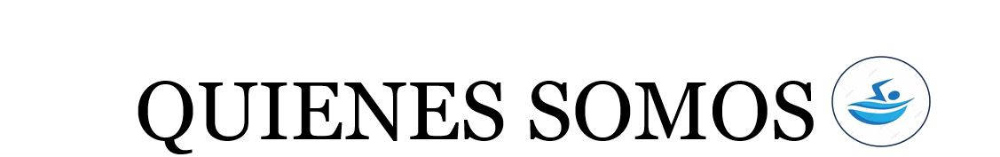
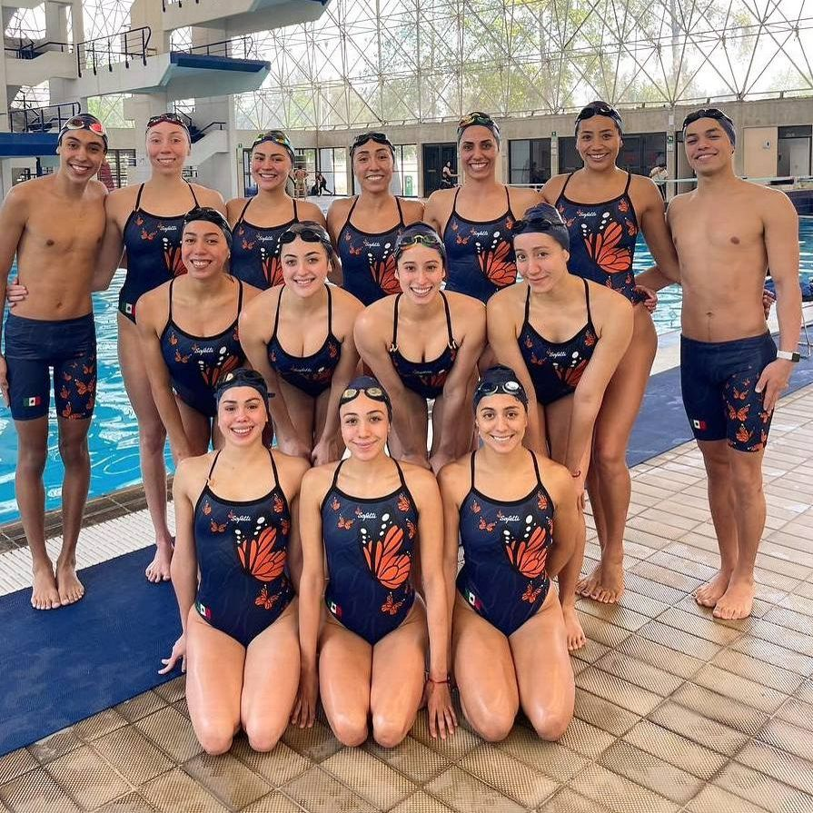

 |
|
Nuestra MisiónNuestra misión es brindar una formación integral en natación que no solo mejore las habilidades acuáticas de nuestros alumnos, sino que también fomente valores como la disciplina, el trabajo en equipo y la superación personal. Creemos firmemente que la natación es más que un deporte; es una herramienta para el desarrollo físico, mental y emocional. Nuestro EquipoContamos con un equipo de instructores altamente capacitados y apasionados por la enseñanza de la natación. Muchos de nuestros instructores son exalumnos de AquaVida que han decidido regresar para compartir su conocimiento y experiencia con las nuevas generaciones. Nos enorgullece tener un equipo que no solo enseña técnica, sino que también inspira y motiva a nuestros estudiantes. InstalacionesNuestras instalaciones están diseñadas para proporcionar un ambiente seguro y acogedor para todos nuestros alumnos. Contamos con varias piscinas, incluyendo una piscina climatizada para los meses de invierno, y áreas de entrenamiento especializadas que permiten a nuestros estudiantes desarrollar sus habilidades de manera óptima. Además, ofrecemos vestuarios equipados y una tienda de artículos de natación con descuentos exclusivos para nuestros alumnos. Programas y ServiciosEn AquaVida, ofrecemos una variedad de programas para todas las edades y niveles de habilidad, desde clases para principiantes hasta entrenamiento avanzado para competidores. También proporcionamos evaluaciones de habilidades iniciales gratuitas, programas de responsabilidad social, y eventos comunitarios para promover el bienestar y la actividad física en nuestra comunidad. r. |
Nuestro equipo:
 |